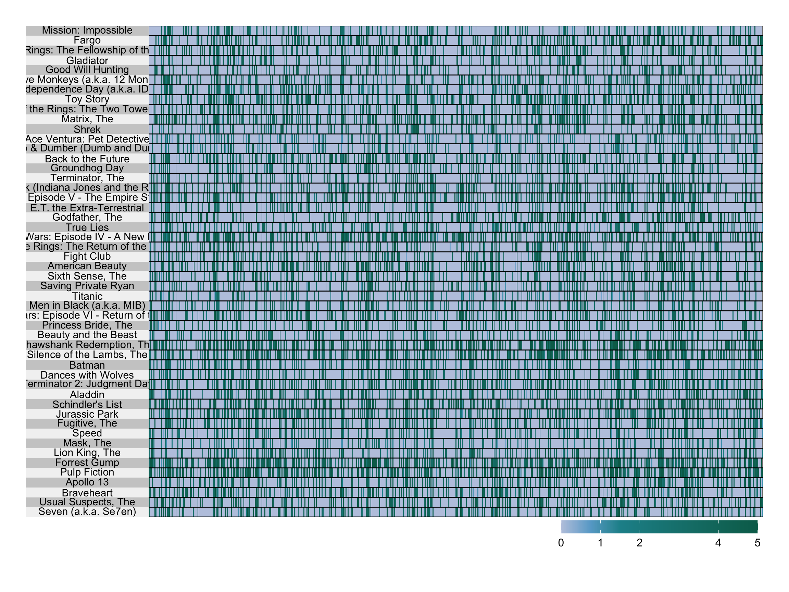
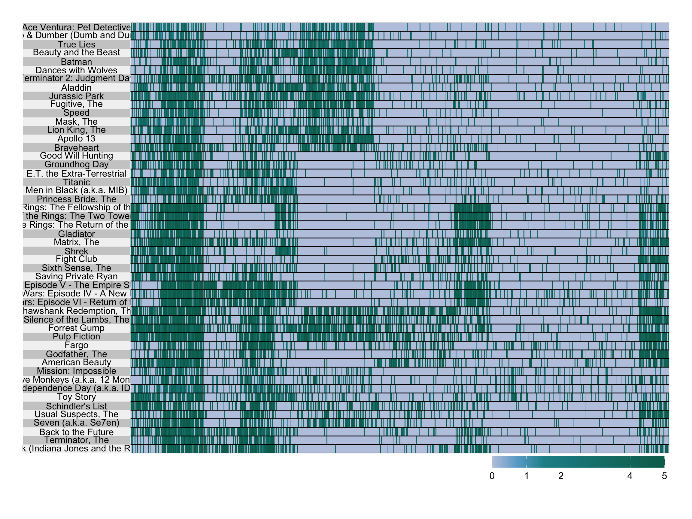
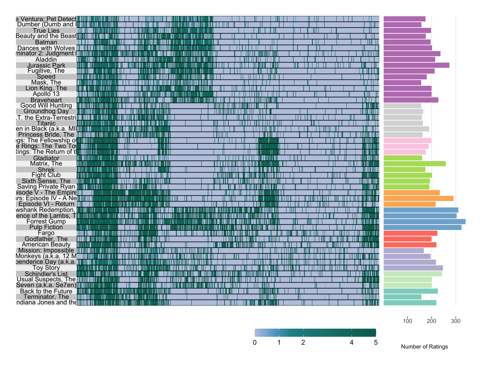
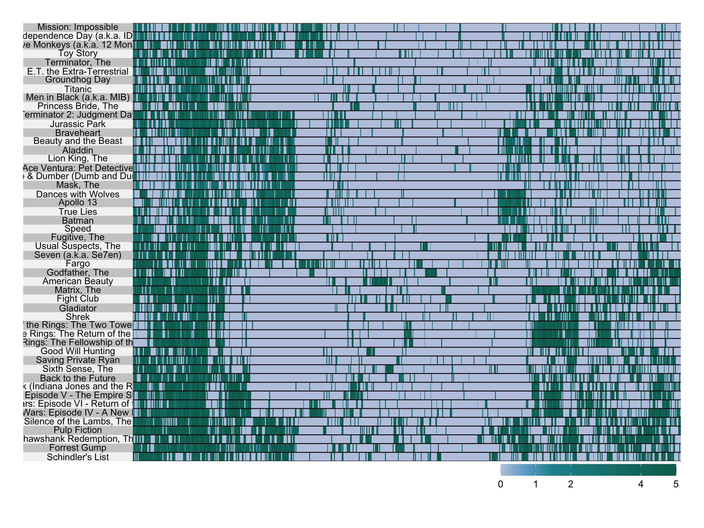
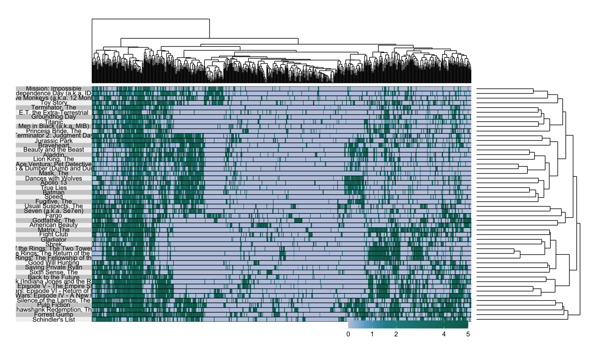

library("dplyr")
library("ggplot2")
library("readr")
library("superheat")
library("tibble")
theme_set(theme_minimal())Heatmaps
Visualizing table values, ordered by clustering results.
The direct outputs of a standard clustering algorithim are (a) cluster assignments for each sample, (b) the centroids associated with each cluster. A hierarchical clustering algorithm enriches this output with a tree, which provide (a) and (b) at multiple levels of resolution.
These outputs can be used to improve visualizations. For example, they can be used to define small multiples, faceting across clusters. One especially common idea is to reorder the rows of a heatmap using the results of a clustering, and this is the subject of these notes.
In a heatmap, each mark (usually a small tile) corresponds to an entry of a matrix. The \(x\)-coordinate of the mark encodes the index of the observation, while the \(y\)-coordinate encodes the index of the feature. The color of each tile represents the value of that entry. For example, here are the first few rows of the movies data, along with the corresponding heatmap, made using the superheat package.
movies_mat <- read_csv("https://uwmadison.box.com/shared/static/wj1ln9xtigaoubbxow86y2gqmqcsu2jk.csv") %>%
column_to_rownames(var = "title")cols <- c('#f6eff7','#bdc9e1','#67a9cf','#1c9099','#016c59')
superheat(movies_mat, left.label.text.size = 4, heat.pal = cols, heat.lim = c(0, 5))
- Just like in adjacency matrix visualizations, the effectiveness of a heatmap can depend dramatically on the way in which rows and columns are ordered. To provide a more coherent view, we cluster both rows and columns, placing rows / columns belonging to the same cluster next to one another.
movies_clust <- movies_mat %>%
kmeans(centers = 10)
users_clust <- movies_mat %>%
t() %>%
kmeans(centers = 10)
superheat(
movies_mat,
left.label.text.size = 4,
order.rows = order(movies_clust$cluster),
order.cols = order(users_clust$cluster),
heat.pal = cols,
heat.lim = c(0, 5)
)
- superheat also makes it easy to visualize plot statistics adjacent ot the adjacent to the main heatmap. These statistics can be plotted as points, lines, or bars. Points are useful when we want to highlight the raw value, lines are effective for showing change, and bars give a sense of the area below a set of observations. In this example, we use an added panel on the right hand side (
yr) to encode the total number of ratings given to that movie. Theyr.obs.colsallows us to change the color of each point in the adjacent plot. In this example, we change color depending on which cluster the movie was found to belong to.
cluster_cols <- c('#8dd3c7','#ccebc5','#bebada','#fb8072','#80b1d3','#fdb462','#b3de69','#fccde5','#d9d9d9','#bc80bd')
superheat(
movies_mat,
left.label.text.size = 4,
order.rows = order(movies_clust$cluster),
order.cols = order(users_clust$cluster),
heat.pal = cols,
heat.lim = c(0, 5),
yr = rowSums(movies_mat > 0),
yr.axis.name = "Number of Ratings",
yr.obs.col = cluster_cols[movies_clust$cluster],
yr.plot.type = "bar"
)
- It also makes sense to order the rows / columns using hierarchical clustering. This approach is especially useful when the samples fall along a continuous gradient, rather than belonging to clearly delineated groups. The
pretty.order.rowsandpretty.order.colsarguments use hierarchical clustering to reorder the heatmap.
superheat(
movies_mat,
left.label.text.size = 4,
pretty.order.cols = TRUE,
pretty.order.rows = TRUE,
heat.pal = cols,
heat.lim = c(0, 5)
)
- The hierarchical clustering trees estimated by
pretty.order.rowsandpretty.order.colscan be also visualized.
superheat(
movies_mat,
left.label.text.size = 4,
pretty.order.cols = TRUE,
pretty.order.rows = TRUE,
row.dendrogram = TRUE,
col.dendrogram = TRUE,
heat.pal = cols,
heat.lim = c(0, 5)
)